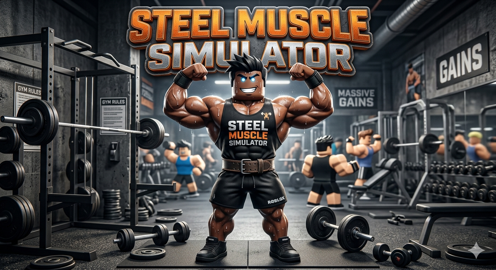
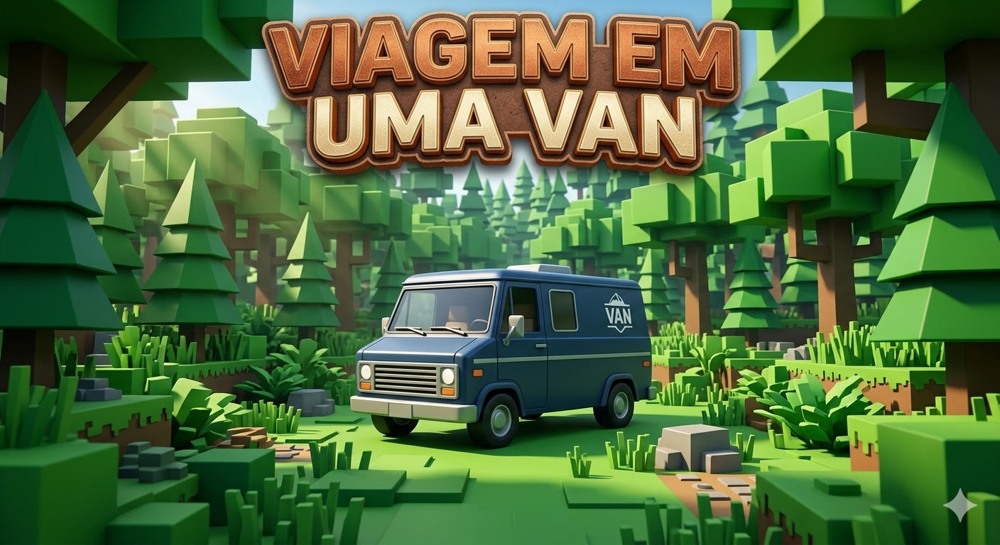
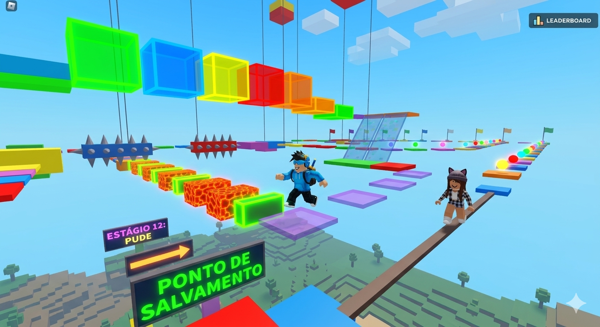
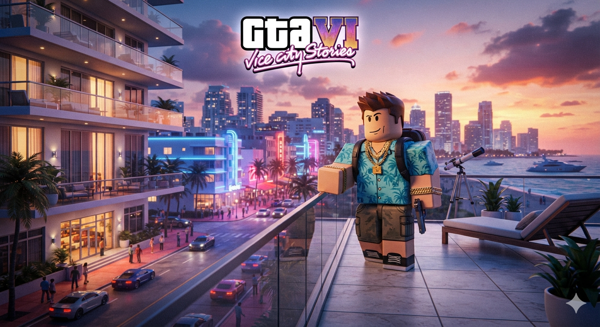
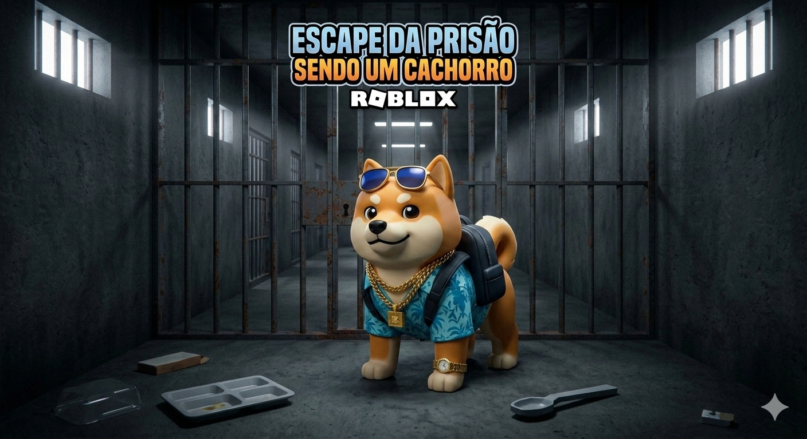
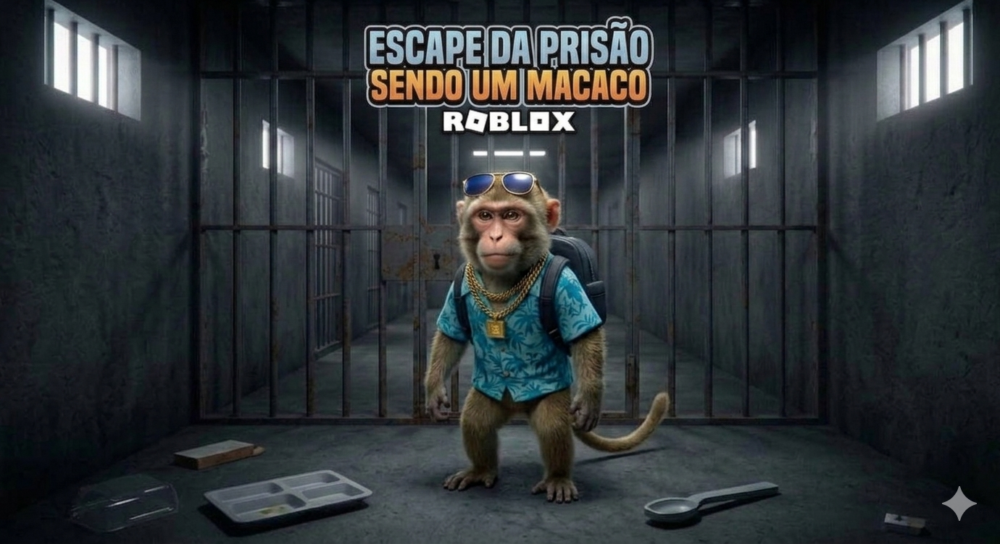
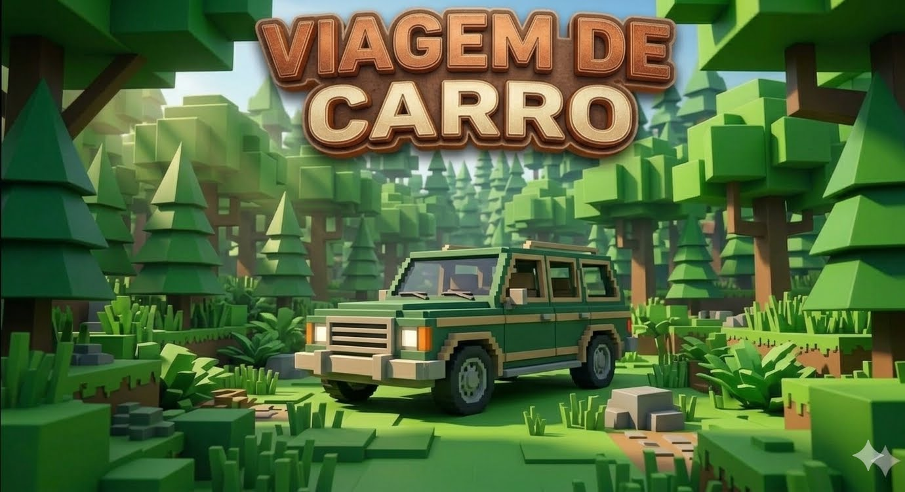
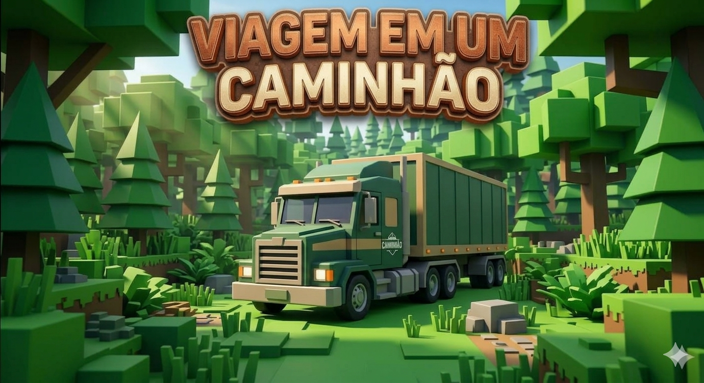
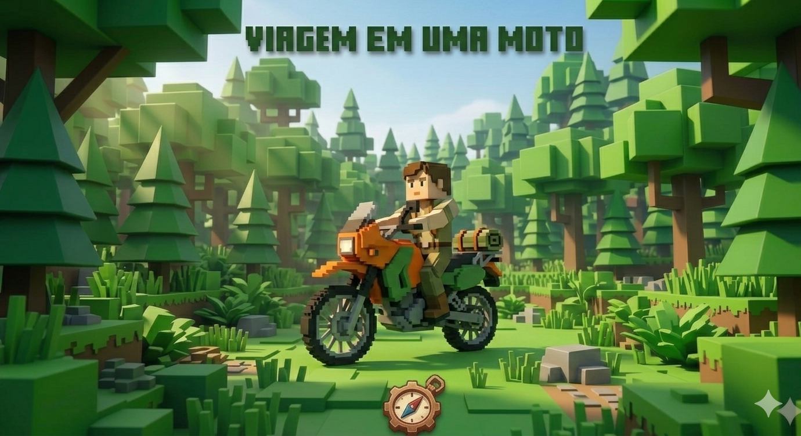
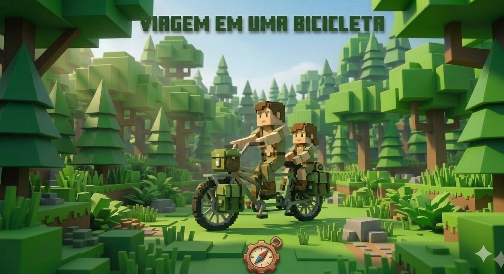

Criamos jogos inovadores e envolventes que transformam a imaginação em experiências digitais inesquecíveis para jogadores de todas as idades. Nossa equipe combina paixão por tecnologia, narrativas cativantes e design de ponta para desenvolver universos únicos, divertidos e cheios de desafios que conectam comunidades ao redor do mundo.

Desenvolvemos nossos jogos no Roblox utilizando o ecossistema Roblox Studio e a linguagem de programação Luau. Nosso processo começa com a criação de mecânicas divertidas através de scripts otimizados, garantindo que a jogabilidade seja fluida tanto em computadores quanto em celulares. Em seguida, moldamos os mundos digitais combinando modelagem 3D detalhada, efeitos visuais imersivos e design de som dinâmico. Por fim, focamos na experiência do usuário e em atualizações constantes baseadas no feedback da comunidade para manter nossa base de jogadores engajada.

Criamos nossos jogos na Unity aproveitando o poder e a flexibilidade desse motor gráfico multiplataforma. Programamos as mecânicas em C#, garantindo códigos limpos e sistemas de inteligência artificial dinâmicos para uma jogabilidade envolvente. Utilizamos os recursos avançados de renderização (URP/HDRP) para dar vida a gráficos realistas ou estilizados com iluminação de ponta. Além disso, criamos experiências imersivas integrando simulações físicas precisas, efeitos visuais impressionantes e áudio espacializado. Tudo isso é otimizado para que o produto final rode perfeitamente em PCs, consoles ou dispositivos móveis.

A VoxelCraft Studios é uma desenvolvedora de jogos apaixonada por transformar grandes ideias em experiências digitais interativas. Com uma trajetória marcada pela criação de vários jogos de sucesso, nossa equipe combina criatividade, design inteligente e alta capacidade técnica para construir universos únicos e envolventes. Seja explorando mundos pixelados ou desenvolvendo mecânicas complexas, nosso objetivo é sempre entregar diversão de alta qualidade e conectar jogadores ao redor do mundo.

A VoxelCraft Studios distribui suas produções globalmente, marcando presença em todas as principais plataformas de entretenimento digital. Nossos jogos estão disponíveis nos consoles de última geração através da PlayStation Store e da Microsoft Store para Xbox, garantindo experiências imersivas de alta performance na TV da sua sala. Para os jogadores de PC, lançamos nossos títulos na competitiva vitrine da Epic Games Store. Também alcançamos o público móvel através da Google Play Store e expandimos nossa criatividade dentro do metaverso com experiências inovadoras desenvolvidas diretamente na plataforma do Roblox
A VoxelCraft Studios tem o orgulho de anunciar três grandes lançamentos que expandirão ainda mais o nosso universo de jogos:Jogo de Luta (Roblox): Prepare-se para combates intensos e cheios de ação neste novo título focado em arenas competitivas, onde os jogadores poderão dominar combos devastadores e enfrentar oponentes do mundo todo em partidas dinâmicas e otimizadas.Jogo de Parkour (Roblox): Desafie a gravidade em uma experiência de ritmo acelerado dentro do Roblox, repleta de circuitos verticais, acrobacias fluidas e obstáculos complexos projetados para testar os reflexos e a agilidade da comunidade.Novo Jogo Mobile (Título a ser confirmado): Uma nova e ambiciosa produção desenvolvida especificamente para celulares, trazendo mecânicas inovadoras e gráficos otimizados para as telas portáteis, com o nome oficial e os detalhes finais prestes a serem revelados na Google Play Store.

A equipe da VoxelCraft Studios é composta por profissionais multifuncionais que garantem a administração técnica e a criação visual de todos os projetos:Direção e Administração Geral: Yago lidera o estúdio como dono, contando com o suporte estratégico dos administradores Ezequiel, Iran, Lucas, Matheus e Ana para a gestão operacional.Programação: Yago e Zelly comandam o desenvolvimento técnico, transformando ideias complexas em códigos e mecânicas funcionais para os jogos.Design: Yago e Matheus dão vida à identidade visual, criando a arte, os cenários e toda a estética dos ambientes digitais.
Fique por dentro das novidades mais quentes e veja as estreias de jogos que prometem agitar a comunidade de jogadores em todas as plataformas! A VoxelCraft Studios está preparando uma linha incrível de lançamentos, trazendo combates eletrizantes em uma arena de luta no Roblox, desafios verticais de tirar o fôlego em um novo jogo de parkour e uma experiência portátil inovadora e exclusiva para celulares. Fique atento às nossas redes e lojas oficiais para não perder o dia do lançamento e ser um dos primeiros a explorar esses novos mundos virtuais!

Prepare-se para dominar a academia e se tornar uma lenda dos ringues em Steel Muscle Simulator no Roblox! Neste emocionante simulador de força e combate, sua jornada começa do zero: treine pesado com halteres, barras e esteiras de última geração para ver seu personagem evoluir de um iniciante comum a um gigante musculoso e imbatível. Mas o verdadeiro desafio começa fora da academia, onde você usará toda a sua força em arenas de luta colossais para desafiar outros usuários em tempo real, testar seus combos devastadores e provar quem é o verdadeiro campeão do servidor. Erga os pesos, supere seus limites, conquiste as classificações globais e mostre para toda a comunidade do Roblox o poder dos seus músculos! data nao confirmada

Em Viagem de Van, você e seu grupo de amigos entram em uma jornada cooperativa de tirar o fôlego, onde o trabalho em equipe é a única chave para a sobrevivência no Roblox! Enquanto cruzam estradas desertas e florestas densas, sua van começará a falhar, forçando o grupo a parar e explorar locais assustadores. Vocês precisarão criar coragem para entrar em casas abandonadas e galpões esquecidos pelo caminho, vasculhando cada canto escuro atrás de recursos vitais como pneus reservas, ferramentas e galões de gasolina para consertar o veículo. Fiquem sempre atentos e ajudem uns aos outros: o combustível está acabando, os perigos espreitam no escuro e cada escolha determina se o grupo conseguirá continuar a viagem ou ficará perdido para sempre. O lançamento desta grande aventura está muito próximo, com a data oficial a ser confirmada muito em breve pela VoxelCraft Studios!

Marque no calendário: no dia 31 de agosto, o novo Obby Parkour da VoxelCraft Studios chega oficialmente ao Roblox! Suba aos céus em um mapa monumental repleto de plataformas coloridas, blocos de neon flutuantes e obstáculos móveis que exigirão saltos milimetricamente calculados. Supere perigos intensos como rios de lava ardente, armadilhas de espinhos e caminhos estreitos que desafiam o equilíbrio de qualquer jogador. Com um sistema dinâmico de pontos de salvamento (checkpoints) espalhados pelo percurso, você poderá competir em tempo real contra seus amigos dentro do servidor para ver quem lidera a tabela de classificação e alcança o topo do mundo primeiro.

🏆 VICE CITY ROLEPLAY: A NOVA ERA DO RP NO ROBLOX🌆 INTRODUÇÃO AO PROJETOO Próximo Passo do Metaverso: O maior e mais ambicioso projeto de Roleplay (RP) já visto na plataforma do Roblox está chegando para quebrar barreiras.Inovação Técnica Sem Precedentes: Desenvolvido pela VoxelCraft Studios, este título foi planejado para redefinir as possibilidades de simulação urbana e interatividade social.O Coração da Experiência: Um mundo vivo, persistente e em constante evolução, onde cada escolha sua molda o seu destino econômico, social e criminal.A Grande Escala: Quilômetros quadrados de mapa totalmente otimizados para suportar centenas de jogadores simultâneos sem perda de performance ou fidelidade visual.Sua Nova Vida Digital: Esqueça tudo o que você conhece sobre jogos casuais; este é um simulador de vida real definitivo, robusto e profundamente detalhado.🎨 REVOLUÇÃO VISUAL: 60% DE GRÁFICOS REALISTASIluminação Global Avançada: Utilização máxima das capacidades de renderização do motor gráfico para criar reflexos em tempo real em poças d'água e superfícies metálicas.Ciclo de Dia e Noite Fotorrealista: Transições suaves de iluminação que imitam o sol da Flórida, com amanheceres dourados e noites banhadas por luzes de neon vibrantes.Otimização Inteligente de Texturas: Texturas personalizadas em alta definição aplicadas em asfalto, concreto, vegetação e superfícies de vidro, criando um contraste visual impressionante.Efeitos de Clima Dinâmico: Tempestadestropicais realistas, neblina matinal densa e calor que deforma visualmente o horizonte das avenidas asfálticas.Sombras Suaves Dinâmicas: Projeção de sombras perfeitamente alinhadas com a posição das fontes de luz, incluindo postes de iluminação e faróis dos automóveis.Interior de Construções Detalhado: Janelas translúcidas que revelam lojas, apartamentos e escritórios com profundidade real e iluminação interna independente.Física de Partículas Aprimorada: Fumaça de escapamentos, poeira levantada em estradas de terra e faíscas em colisões que aumentam drasticamente a imersão visual.Modelagem de Personagens Refinada: Suporte a roupas em camadas (Layered Clothing) com caimento realista e animações faciais e corporais incrivelmente fluidas.📍 O CENÁRIO: A GLORIOSA VICE CITY INSPIRADA EM GTA VIRecriação Fiel e Expandida: Uma metrópole tropical inspirada na versão mais recente de Vice City, misturando praias paradisíacas e arranha-céus colossais.Praias de Vice Beach: Quilômetros de areia branca utilizável, com águas cristalinas sombreadas por palmeiras que balançam de acordo com a velocidade do vento.O Distrito Tecnológico e Financeiro: Ruas cercadas por prédios espelhados, sedes de corporações gigantescas e bancos centrais altamente vigiados por forças de segurança.Os Subúrbios e Periferias: Bairros residenciais detalhados, becos perigosos controlados por gangues locais e motéis de beira de estrada com forte pegada cinematográfica.A Região dos Pântanos (Neon Everglades): Áreas rurais úmidas nas bordas do mapa, com pontes de madeira, vegetação densa e canais perfeitos para fugas de barco.Vida Urbana Ativa: Pedestres controlados por inteligência artificial avançada que reagem às ações dos jogadores, ao tráfego e aos eventos do cenário.Pontos de Interesse Interativos: Clubes de dança com luzes de neon, estúdios de tatuagem, barbearias, lojas de conveniência assaltáveis e concessionárias de luxo.Sistemas de Trânsito Inteligentes: Semáforos funcionais, faixas de pedestres respeitadas pela IA e radares de velocidade que emitem multas automaticamente para os infratores.🏎️ GARAGEM SUPREMA: MAIS DE 100 CARROS E MOTOSVariedade Incomparável de Sedans: Carros compactos para o dia a dia, táxis urbanos e sedans executivos perfeitos para quem busca discrição nas ruas.Superesportivos de Alta Performance: Máquinas velozes inspiradas em marcas icônicas mundiais, com aceleração absurda, aerofólios ativos e ronco de motor customizado.Muscle Cars Americanos: Clássicos potentes com tração traseira que queimam pneu com facilidade e dominam as corridas de arrancada noturnas.Utilitários e SUVs robustos: Veículos de grande porte perfeitos para transporte de cargas pesadas, subida de calçadas e proteção contra colisões.Motos Esportivas e de Trilha: Motocicletas de alta cilindrada para cortar o trânsito em alta velocidade e motos de cross prontas para saltos no pântano.Customização Mecânica Avançada: Modificação completa de motores, sistemas de freio, suspensão a ar, turbos e kits de nitro para ganho de velocidade.Tuning Visual Completo: Troca de rodas, aerofólios, capôs, para-choques, aplicação de películas escuras (insulfilm) e pinturas neon personalizadas.Física de Condução Realista: Cada veículo possui peso próprio, tração diferenciada (FWD, RWD, AWD) e comportamento único em curvas ou terrenos molhados.Sistema de Danos Visuais: Amassados na lataria, vidros quebrados, portas caindo e fumaça saindo do capô após batidas graves.Consumo de Combustível Real: Necessidade constante de abastecer nos postos de gasolina espalhados pelo mapa e verificar o nível de óleo do motor.🛸 DOMÍNIO DO ESPAÇO AÉREO: HELICÓPTEROS E AVIAÇÃOHelicópteros de Resgate e Polícia: Aeronaves oficiais equipadas com holofotes de busca noturna, sirenes potentes e alto-falantes para perseguições aéreas.Helicópteros Executivos de Luxo: Modelos privados com acabamento em couro para transporte rápido de empresários e magnatas entre os arranha-céus.Helicópteros de Carga e Transporte: Modelos pesados focados no transporte logístico de suprimentos ou veículos suspensos por cabos de aço.Controle de Voo Técnico: Mecânica de pilotagem que exige habilidade para estabilizar a altitude, inclinar a aeronave e realizar pousos de emergência perfeitos.Helipontos Espalhados pelo Mapa: Plataformas de pouso localizadas nos tetos dos maiores prédios, em delegacias, hospitais e mansões litorâneas.Manutenção Aérea Necessária: Hangares específicos para reabastecimento de querosene de aviação, reparo de hélices e checagem de sistemas eletrônicos.👔 O SISTEMA DE JOBS E ECONOMIA LEGALCorporação Policial de Elite (VCPD): Patrulhe as ruas, atenda chamados de emergência, realize abordagens táticas, emita multas e prenda criminosos em flagrante.Corpo de Bombeiros e Paramédicos: Resgate jogadores feridos em acidentes, apague incêndios em prédios comerciais e pilote ambulâncias em alta velocidade.Empresários e Investidores de Imóveis: Compre prédios comerciais, gerencie lojas de roupas, lucre com taxas de entrada em baladas e construa um império.Sistema de Logística e Caminhoneiros: Transporte cargas pesadas entre o porto de Vice City e os comércios locais, desviando de rotas perigosas.Motoristas de Aplicativo e Táxi: Leve jogadores de um ponto a outro do mapa, cobrando tarifas dinâmicas baseadas na distância percorrida.Mecânicos de Oficina Oficial: Conserte motores fundidos, troque pneus furados por pregos, guinche carros abandonados e faça tuning para os clientes.Trabalhos Casuais para Iniciantes: Serviços simples como lixeiro, entregador de pizza e faxineiro de praia para acumular os primeiros dólares no servidor.Sistema Bancário Centralizado: Contas corrente e poupança funcionais, caixas eletrônicos (ATMs) para saques, cartões de crédito e transferências via Pix interno.🕶️ O SUBMUNDO CRIMINAL: PODER E ESTRATÉGIACriação de Facções e Gangues: Monte seu próprio grupo criminoso, defina as cores da sua organização e recrute membros para dominar territórios rivais.Guerra de Territórios Dinâmica: Dispute o controle de bairros estratégicos que geram renda passiva de dinheiro sujo para a sua organização.Grandes Roubos a Bancos: Planeje assaltos complexos ao banco central, exigindo invasão de sistemas, controle de reféns e uma rota de fuga aérea ou terrestre.Invasão de Lojas de Conveniência: Assaltos rápidos a comércios locais para obter dinheiro rápido, ativando imediatamente o sistema de procurado da polícia.Contrabando de Armas e Cargas: Busque caixas de armamentos pesados nas áreas isoladas do pântano e transporte-as até os galpões sem ser interceptado.Sistema de Desmanche de Carros: Roube veículos de luxo nas ruas, altere as placas ou leve-os até o desmanche clandestino para vender as peças separadas.Lavagem de Dinheiro Sujo: Encontre rotas e comércios de fachada para transformar o dinheiro obtido em crimes em saldo limpo no banco oficial.Mercado Negro (Black Market): Localizações secretas que mudam de lugar no mapa, vendendo coletes balísticos, ferramentas de arrombamento e armamentos raros.⚖️ SISTEMA DE JUSTIÇA, LEIS E CRIMINALIDADENível de Procurado Evolutivo: Estrelas de procurado que definem a agressividade da IA e dos policiais reais, variando de patrulhas simples até cercos com helicópteros.Delegacias e Prisões Funcionais: Jogadores presos são levados para o complexo penitenciário, onde cumprem tempo real de pena baseado nos crimes cometidos.Trabalho Comunitário para Redução de Pena: Possibilidade de limpar o pátio da prisão ou lavar uniformes para reduzir os minutos de detenção na cela.Sistema de Julgamento e Advogados: Contrate jogadores que atuam como advogados para pagar fianças caras ou reduzir suas acusações no tribunal oficial.Uso de Disfarces e Troca de Placas: Pinte seu veículo ou mude suas roupas em lojas para despistar o sistema de rastreamento das forças policiais.🏠 MORADIA, PROPRIEDADES E CUSTOMIZAÇÃO DE VIDAApartamentos de Luxo na Praia: Imóveis com vista para o mar, garagens privativas para múltiplos veículos e áreas de lazer internas customizáveis.Mansões em Ilhas Privadas: Propriedades colossais de altíssimo valor com heliponto próprio, docas para barcos e sistemas de segurança privada.Casas Populares e Kitnets: Opções de moradia baratas para jogadores iniciantes guardarem seus itens básicos e terem um ponto de renascimento no mapa.Customização de Interiores (Mobília): Compre sofás, televisores funcionais, camas, mesas e quadros para decorar sua casa através de um sistema de edição livre.Armazenamento Seguro de Itens: Cofres residenciais e armários para guardar armas ilegais, dinheiro vivo e roupas exclusivas sem risco de perda.Sistemas de Utilidade Doméstica: Necessidade de pagar contas de luz e água da propriedade para evitar o corte dos serviços e tranca eletrônica das portas.📱 SISTEMA DE SMARTPHONE INTERATIVO (HUD IN-GAME)Interface Totalmente Funcional: Um celular digital de última geração acessível na tela com aplicativos que controlam toda a vida do seu personagem.Aplicativo de Banco e Finanças: Monitore seu saldo, pague multas pendentes, envie dinheiro para amigos e gerencie as contas das suas empresas.Aplicativo de Concessionária e Garagem: Rastreie a localização exata de todos os seus carros, verifique o estado do motor e chame o seguro mecânico.Rede Social Interna (VoxelGram): Poste fotos tiradas com a câmera do celular, compartilhe textos, siga outros jogadores e anuncie eventos na cidade.Aplicativo de Mensagens e Chamadas: Converse por texto ou chamadas de voz por rádio com contatos salvos na sua agenda de forma privada.GPS e Navegação de Trânsito: Marque pontos turísticos, delegacias, lojas ou propriedades no mapa do celular para gerar uma rota visual na estrada.Deep Web e Serviços Ilegais: Aplicativo oculto usado por criminosos para aceitar contratos de roubo, comprar informações ou localizar o mercado negro.🤝 INTERAÇÃO SOCIAL E CHAT DE VOZ POR PROXIMIDADEÁudio Espacializado de Alta Fidelidade: Converse com jogadores nativamente usando o chat de voz do Roblox, com o volume diminuindo de acordo com a distância.Rádios de Comunicação por Frequência: Utilize rádios comunicadores com canais fechados para coordenar ações táticas policiais ou assaltos em equipe.Animações e Expressões Corporais (Emotes): Menu completo com centenas de gestos como cumprimentos, danças, rendição, poses de combate e acenos.Criação de Eventos Comunitários: Organize encontros de carros na praia, festas em iates de luxo, campeonatos de arrancada ou convenções políticas.Sistemas de Clãs e Famílias: Registre o nome oficial da sua família no servidor para compartilhar propriedades, garagens e contas bancárias conjuntas.🛠️ ADMINISTRAÇÃO E SUPORTE DA VOXELCRAFT STUDIOSModeração Ativa 24 Horas: Administradores reais presentes nos servidores para garantir que as regras de Roleplay (Anti-RP, VDM, RDM) sejam seguidas.Sistemas Anti-Cheat Avançados: Proteção robusta contra exploits de teletransporte, duplicação de dinheiro e modificações de velocidade não autorizadas.Logs Detalhados de Transações: Registro automático de todas as ações importantes do servidor para resolver disputas de itens e devoluções com segurança.Painel de Denúncias Prático: Sistema integrado no menu para reportar comportamentos tóxicos ou quebras de regras diretamente para a equipe técnica.Atualizações Semanais de Conteúdo: Correções de estabilidade, adição de novos carros, roupas inéditas e eventos sazonais baseados no feedback dos jogadores.📅 CRONOGRAMA, LANÇAMENTO E HORIZONTE DE DESENVOLVIMENTOFase de Planejamento Técnico Inicial: Estruturação dos códigos base, testes de estresse de servidores e criação do motor de física vehicular aprimorado.Desenvolvimento da Arquitetura do Mapa: Modelagem detalhada dos blocos urbanos, texturização de estradas e posicionamento dos prédios de Vice City.Fase Alpha Fechada para Testadores: Testes restritos com criadores de conteúdo e apoiadores para avaliar a estabilidade dos 60% de gráficos realistas.Fase Beta Aberta para a Comunidade: Abertura dos servidores para o público geral testar os sistemas de empregos, economia e estabilidade dos veículos.A Grande Estreia Global: Lançamento oficial da versão 1.0 com todos os sistemas ativos, concessionárias lotadas e o submundo criminal funcionando.Previsão de Lançamento Definitiva: O projeto mais ambicioso do Roblox está planejado e agendado para estrear entre os anos de 2027 ou 2028.O Futuro do Entretenimento Interativo: Prepare-se para vivenciar o ápice do Roleplay tecnológico e urbano diretamente no seu dispositivo!

🐕 Escape da Prisão: Aventura Canina (Lançamento: 30 de Setembro)Prepare-se para a fuga mais fofa e astuta do Roblox! Neste jogo de fuga, você assume o papel de um cachorro determinado a escapar da segurança máxima da prisão. Use seu tamanho para passar por tubulações apertadas, cave buracos estrategicamente pelos pátios, distraia os guardas latindo e corra em alta velocidade para conquistar sua liberdade. Chame seus amigos para formar uma verdadeira matilha e use o trabalho em equipe para abrir as trancas e encontrar a rota de fuga perfeita. Fique atento: o grande plano de fuga entra em ação oficialmente no dia 30 de setembro!

🐒 Escape da Prisão: Operação Macaco (Lançamento: 15 de Novembro)A segurança da prisão nunca viu nada igual! No dia 15 de novembro, chega ao Roblox um desafio de fuga caótico e vertical, onde você joga como um macaco super ágil. Esqueça os caminhos comuns: use suas habilidades para escalar grades altas, balançar-se em tubulações no teto, roubar chaves dos bolsos dos guardas sem ser pego e causar uma verdadeira confusão nas celas para abrir caminho. Reúna seu bando, salte sobre os obstáculos com acrobacias impressionantes e mostre que nenhuma jaula é capaz de segurar a sua agilidade!

Marque no calendário: no dia 15 de outubro, o próximo grande lançamento da VoxelCraft Studios chega oficialmente ao Roblox! Prepare-se para entrar em uma experiência totalmente nova e envolvente, desenvolvida com sistemas otimizados e mecânicas divertidas para garantir a diversão de toda a comunidade. Fique atento às nossas redes sociais para descobrir os primeiros teasers oficiais e os detalhes exclusivos que serão revelados até o grande dia da estreia!

Marque no calendário: no dia 5 de dezembro, essa nova e incrível experiência da VoxelCraft Studios chega oficialmente ao Roblox! Nossa equipe está trabalhando duro para polir cada detalhe, otimizar os scripts e garantir gráficos sensacionais que vão rodar perfeitamente no PC, console ou celular. Chame seus amigos para o servidor, preparem-se para o lançamento e fiquem de olho no grupo oficial para não perderem nenhuma novidade até o grande dia da estreia!

Marque no calendário: no dia 26 de dezembro, a grande experiência de Viagem de Moto da VoxelCraft Studios chega oficialmente ao Roblox! Prepare-se para acelerar fundo logo após o Natal e curtir as férias pilotando duas rodas com física realista e estradas incríveis diretamente na plataforma. Chame a sua galera para fechar o ano com chave de ouro, monte o seu motoclube no servidor e fique de olho no grupo oficial para não perder o momento exato em que os motores vão roncar na estreia!

Em Viagem de Bicicleta, você troca os motores pela força dos seus próprios pedais em uma jornada relaxante e cheia de superação pelas trilhas mais bonitas do Roblox! Escolha o seu modelo ideal — desde bicicletas de corrida superleves até mountain bikes robustas —, ajuste o seu capacete e prepare-se para pedalar por ciclovias litorâneas, trilhas de terra na floresta e subidas desafiadoras nas montanhas. O jogo foca no gerenciamento da sua energia: controle o ritmo nas subidas, pegue velocidade nas descidas e pare em quiosques ou acampamentos para descansar e recuperar o fôlego. Chame seus amigos para formar um pelotão de ciclismo, dispute corridas amistosas e personalize cada detalhe da sua magrela, incluindo cores, adesivos e acessórios. O lançamento oficial está confirmado para abrir o ano novo com chave de ouro no dia 3 de janeiro de 2027!
Ziggy the Explorer:
Ziggy the Explorer é um jogo de plataforma 2D de ação rápida.🎮 O JogoVocê controla um pinguim destemido em uma missão heróica. Seu objetivo é derrotar exércitos de esqueletos e avançar de fase. Cada nível traz labirintos congelados, armadilhas mortais e inimigos mais fortes.🚀 DestaquesCombate Dinâmico: Use ataques de deslize e jogue bolas de neve congelantes.Progressão Rápida: Vença os esqueletos para liberar o portal de saída de cada level.Chefões Desafiadores: Enfrente generais mortos-vivos ao final de cada mundo.Visual Pixel Art: Gráficos em duas dimensões charmosos e cheios de cores Disponivel Para Android Ios Windows.
Imagem Nao Divulgada!